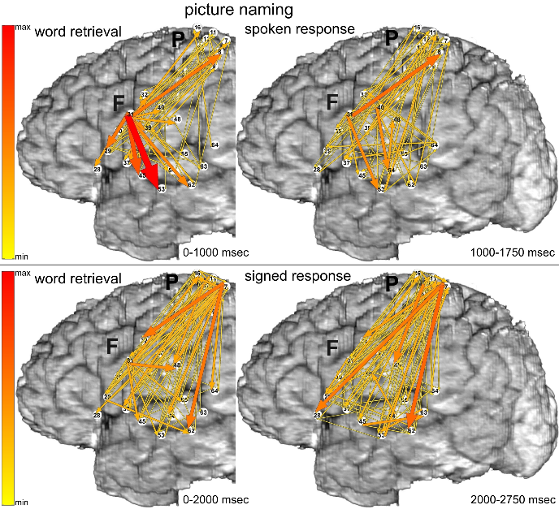

Language Connectivity
The reliance of spoken word production on the function of large-scale cortical networks in frontal, parietal, and temporal lobes has long been appreciated by behavioral neurologists and cognitive psychologists studying the effects of lesions on different brain regions. These effects can be very specific for different aspects of perceptual processing, semantic and phonological representations, and articulatory plans. Psychophysical investigations into the timing of these different cognitive operations have indicated that they occur in a cascaded function. EEG, MEG, and fMRI studies have localized these operations, but because of variations in functional anatomy, these insights cannot be clinically applied to individual patients. ECoG high gamma power changes are sufficiently robust to yield statistically significant responses within individuals, revealing the location and timing of cortical processing at clinically useful resolutions.
Neural oscillations in the gamma frequency range (70-150 Hz) have been proposed to coordinate large-scale brain networks responsible for language and other cognitive brain functions. Oscillatory activity arising from one subnetwork is therefore hypothesized to influence activity arising from another subnetworks. These influences are expected to occur with different strengths and directionalities, reflecting the changing demands on cortical networks during task performance. To capture the timing of such functional brain interactions as well as their directions, intensities, and spectral characteristics, our lab has developed a new method: event-related causality (ERC).
Our lab's hypothesis is that word production requires interactions between perisylvian language cortex, basal temporal language cortex, and sensorimotor cortex. We use the ERC method to analyze ECoG signals recorded while patients perform word production tasks including picture naming, word repetition, reading, and auditory naming to definition. We have recently used these methods to parse the fine temporal dynamics of processing as it is propagates into and out of Broca's area during word production. These studies showed that Broca's area plays a critical role in coordinating and transforming representations from other areas of language cortex into articulatory plans to be executed in motor cortex.
Our lab's hypothesis is that word production requires interactions between perisylvian language cortex, basal temporal language cortex, and sensorimotor cortex. We use the ERC method to analyze ECoG signals recorded while patients perform word production tasks including picture naming, word repetition, reading, and auditory naming to definition. We have recently used these methods to parse the fine temporal dynamics of processing as it is propagates into and out of Broca's area during word production. These studies showed that Broca's area plays a critical role in coordinating and transforming representations from other areas of language cortex into articulatory plans to be executed in motor cortex.
